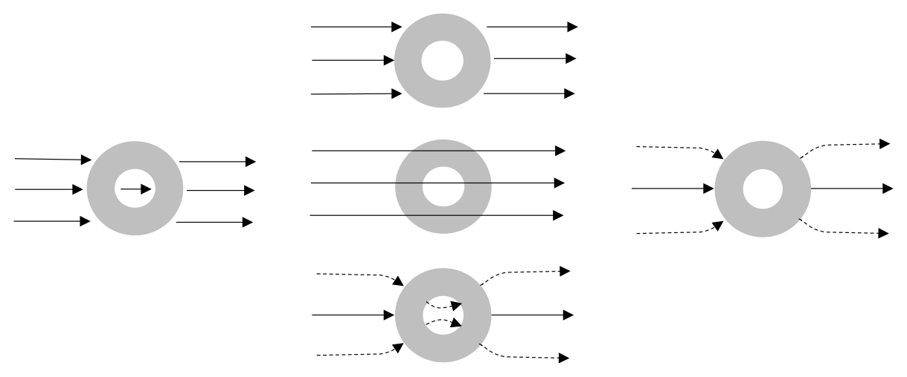
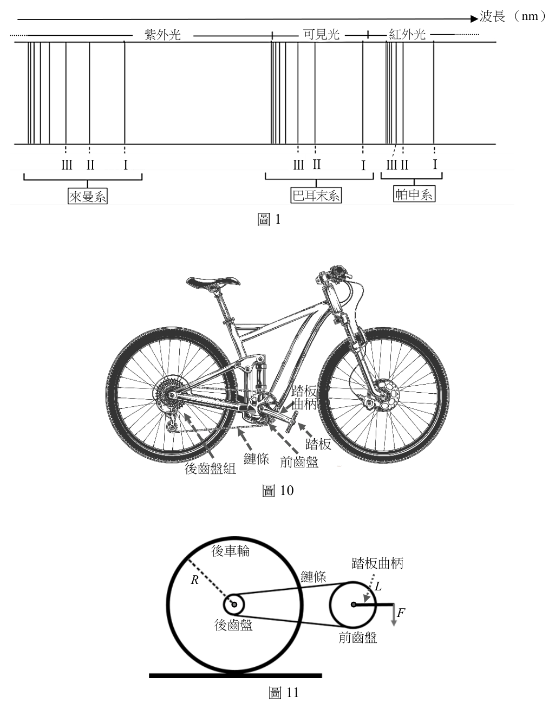
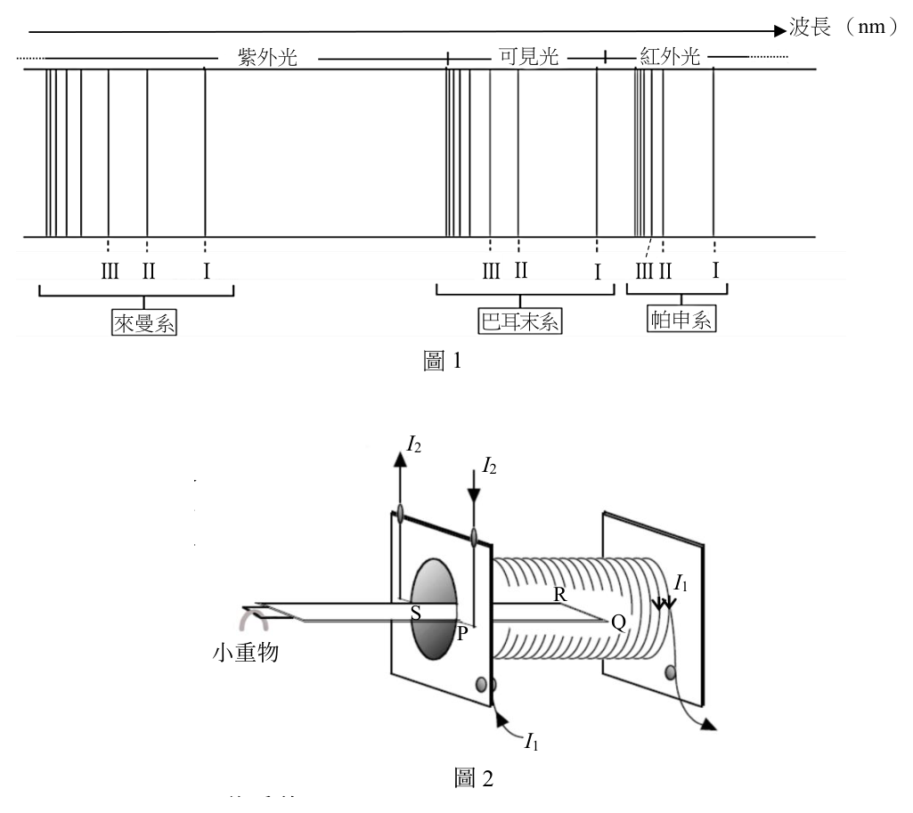
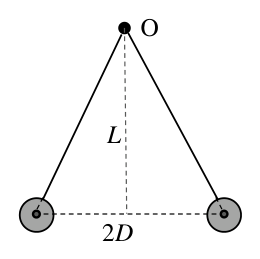
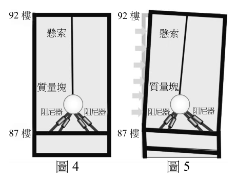
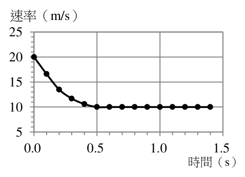
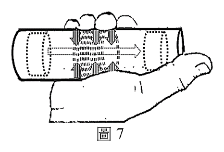
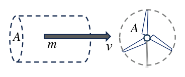
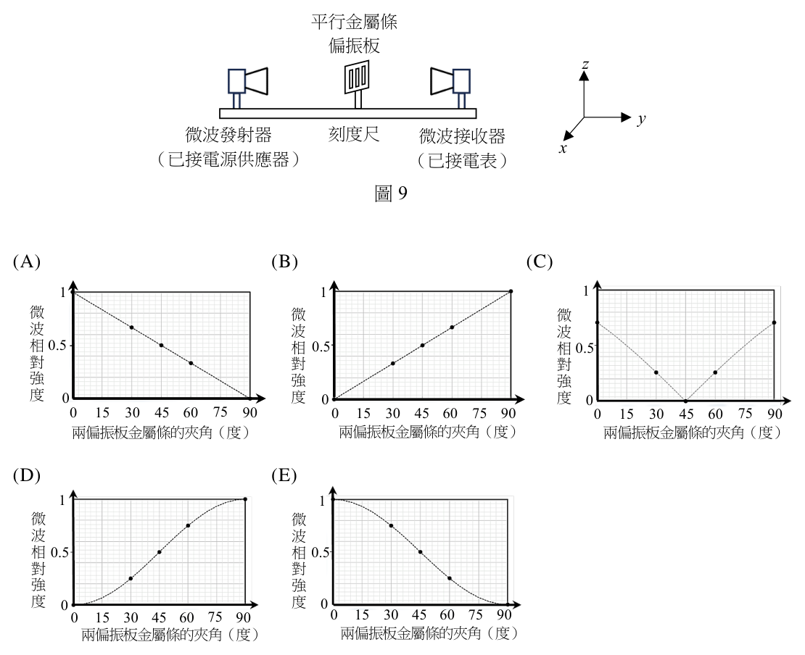
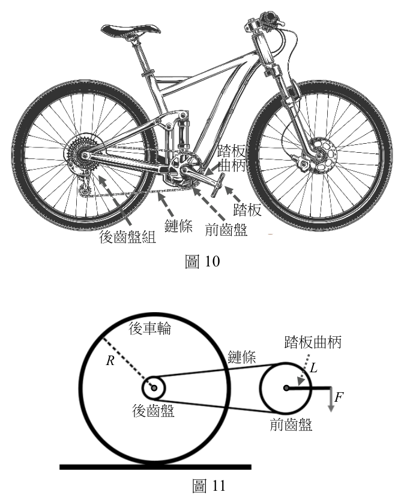

開卷有益 ／
分科測驗 ／ 物理 ／ 113 年113 年分科測驗物理試題與答案
這一頁是民國 113 年分科測驗物理的整份歷屆試題，共 24 題，題目與標準答案出自大考中心 分科測驗歷年試題（依著作權法 §9，考試試題不受著作權保護），其中 24 題附有詳解。以下逐題列出題幹、選項與答案；要計時作答或記錄成績，請用線上練習。
大學入學考試中心原始場次代碼：分科物理
線上作答這一科 →
全部 24 題
第 1 題
常見的守恆律有:甲.質量守恆、乙.力學能守恆、丙.動量守恆、丁.電荷守恆、戊.質能
守恆。在原子核反應的過程中,遵守上列哪些守恆定律?
（A） 僅有甲丙（B） 僅有甲丙丁（C） 僅有乙丙丁（D） 僅有丙丁戊（E） 僅有乙丁戊答案：（D）
詳解與考點 正解：原子核反應會把部分靜質量轉換為其他形式的能量，因此單獨的質量守恆不成立，力學能守恆也不適用；但封閉系統的總動量、總電荷與質能仍守恆。所以應保留丙、丁、戊，故選 D。
A：此項把質量守恆列入，卻漏掉電荷守恆與質能守恆，不符合核反應的守恆關係。
B：雖列出動量與電荷守恆，仍把不能單獨守恆的質量守恆列入，且漏掉質能守恆。
C：力學能不包含核反應中的靜質量與核能轉換，不能列為必然守恆。
E：此項保留電荷與質能守恆，卻誤列力學能守恆並漏掉動量守恆。
本題考點：質能守恆（mass-energy conservation）——核反應中要把靜質量與各形式能量合併考量，不能只檢查質量；動量守恆（momentum conservation）——系統不受外力時，反應前後總動量守恆；電荷守恆（charge conservation）——任何反應前後電荷代數和必須相同。
第 2 題
下列有關光的性質與現象的敘述何者正確?
（A） 不同波長的光在真空中的頻率相同（B） 單色光由空氣進入玻璃中時,其波長會變短（C） 日光下肥皂泡表面呈現的七彩現象,主要是因光的折射所產生（D） 雨後的天空有時會出現彩虹,主要是因陽光經過大氣,產生繞射所導致（E） 光的波粒二象性是指光同時具有由牛頓提出光是微粒所組成的粒子性質,以及由
楊氏雙狹縫干涉實驗所證實的波動性質答案：（B）
詳解與考點 正解：關鍵在單色光跨越介面時頻率由光源決定而保持不變；玻璃的折射率大於空氣，光在玻璃中的速率變小，因此由 λ=v/f 可知波長變短，故選 B。
A：真空中所有光的速率同為 c，但頻率 f=c/λ；波長不同時頻率也不同。
C：肥皂泡的七彩來自薄膜上下表面反射光的光程差所造成的干涉，不是主要由折射產生。
D：彩虹由陽光進入水滴後的折射、色散與內反射形成；繞射通常在波長尺度的狹縫或障礙邊緣才明顯。
E：光的粒子性須以光子及其可觀察效應來描述，不能只把牛頓的微粒說當成現代粒子性的證實；楊氏實驗支持干涉的波動表現，並非把兩種理論直接相加。
本題考點：介質中的光速與波長（speed and wavelength in a medium）——跨介面時頻率不變，先用 v=fλ 判斷波長；薄膜干涉（thin-film interference）——看到肥皂泡或油膜的彩色條紋，判為反射光的光程差；彩虹形成（rainbow formation）——水滴中的折射、色散與內反射要成套辨認。
第 4 題
某科學博物館有一個令人印象深刻的實驗演示:將人安置在一個巨大的金屬籠內,即使
外加於金屬籠的高電壓產生巨大火花,金屬籠內的人依然毫髮無傷。依據前述實驗結果,
若將一導體球殼置於電場中,則下列電力線分布示意圖,何者正確?(各選項中實線代
表不偏折的電力線,虛線代表垂直射入或穿出導體球殼表面的電力線)

（A） （B） （C） （D） （E） 113年分科 第 2 頁 請記得在答題卷簽名欄位以正楷簽全名
物理考科 共 7 頁答案：（D）
詳解與考點 正解：金屬籠示範的是法拉第籠效應。導體達靜電平衡時，自由電荷重新分布，導體材料與封閉空腔內部均不應有電場；外部電力線可終止或起於感應表面電荷，且在導體表面必垂直。符合這些條件的（D）為正確選項，故選 D。
A：電力線若穿越導體材料或在導體內部延伸，代表其中仍有電場，會使自由電荷繼續移動，不能是靜電平衡。
B：導體表面若存在電力線的切向分量，自由電荷會沿表面受力移動；平衡時電場只能垂直於導體表面。
C：電力線不能在無電荷處任意中斷、交叉或形成違反電場方向定義的配置；判讀時要同時檢查表面法向與內部零電場。
E：封閉金屬殼的屏蔽重點是空腔內電場為零，不是讓外加電場原樣穿透至籠內；因此必須以導體內外的電場條件共同判斷。
本題考點：靜電平衡（electrostatic equilibrium）——導體內部電場為零，否則自由電荷會繼續移動；導體表面邊界條件（conducting-surface boundary condition）——電場在導體表面沒有切向分量，電力線須垂直表面；法拉第籠（Faraday cage）——封閉導體可屏蔽外部靜電場，使空腔內部不受外加場影響。
第 5 題
在入射光的頻率高於底限頻率(截止頻率)的光電效應實驗中,實驗測得的截止電壓
(遏止電位)與下列何者成正比?
（A） 電子在被激發出之前的能量（B） 入射光的強度（C） 光電流的強度（D） 被照射金屬靶的功函數（E） 光電子的最大動能答案：（E）
詳解與考點 正解：判準是截止電壓剛好把最快的光電子煞停時，電場所做的功等於其最大動能，即 eV_s=K_max。因此 V_s 與 K_max 成正比，故選 E。
A：電子逸出前在金屬內的個別能量不是截止電壓直接量測的量；決定截止條件的是逸出後光電子的最大動能。
B：入射光強度增加主要提高單位時間逸出的電子數；在頻率不變時，並不提高單一光電子的最大動能。
C：光電流反映收集到的電子數量，會隨強度與收集條件改變；截止電壓則由最快電子是否仍能抵達決定。
D：由 eV_s=hf−φ 可見，在入射頻率固定時，功函數 φ 增大會使截止電壓減小，兩者不是正比。
本題考點：光電效應方程式（photoelectric equation）——先寫 eV_s=K_max=hf−φ，分清頻率、功函數與能量的關係；截止電壓（stopping potential）——它對應最快光電子，不對應光電流大小；光強度的作用（light intensity）——頻率足夠時主要改變電子數量，而非最大動能。
第 6 題
圖1 為氫原子光譜譜線的波長相對位置示意圖(波長絕對位置未依實際刻度繪製),
並以I、II、III 標示來曼系、巴耳末系、帕申系中波長最長的三條光譜線,例如來曼系
標示I 處為電子從主量子數 n = 2 軌域躍遷至 n = 1 軌域所發射的譜線。下列何者為電子
從主量子數 n = 5 軌域躍遷至 n = 3 軌域所發射的譜線?

（A） 帕申系標示I處（B） 帕申系標示II處（C） 巴耳末系標示II處（D） 巴耳末系標示III處（E） 來曼系標示III處
波長 (nm)
紫外光 可見光 紅外光
III II I III II I IIIII I
來曼系 巴耳末系 帕申系
圖1答案：（B）
詳解與考點 正解：判準是躍遷的終態主量子數決定光譜系列，而同一系列中能階差越小，波長越長。n=5→3 的終態是 n=3，屬帕申系；帕申系最長波長 I 對應 n=4→3，n=5→3 的能階差較大、波長次之，故為帕申系 II 處。故選 B。
A：帕申系 I 處是 n=4→3，與本題的起始軌域 n=5 不同；兩者終態同為 n=3，但 I 的波長較長。
C：巴耳末系的終態固定為 n=2，不能表示 n=5→3 的躍遷；「II」只是在各系列內的相對排序，不能跨系列直接對應。
D：巴耳末系 III 同樣終止於 n=2，且與 n=5→3 的終態不符。
E：來曼系的終態固定為 n=1，屬紫外區躍遷，與帕申系不同。
本題考點：氫原子發射光譜（hydrogen emission spectrum）——先以躍遷終態判定來曼、巴耳末或帕申系；波長與能階差（wavelength–energy relation）——同一系列內，能階差較小者的光子能量較低、波長較長。
第 7 題
圖2 為「電流天平」實驗裝置的示意圖,將U 形電路PQRS 放入螺線管內,其中長度為
L 的QR 段約位於螺線管內的中央位置。 I2
I2
螺線管所載電流為 1I ,通過U 形電路
PQRS 的電流為 2I ,天平右臂受有磁力
的作用,而左臂末端掛有小重物。下列
I1 有關此電流天平的敘述何者正確? R
S Q
P
小重物
I1
圖2

（A） U形電路所受的總磁力正比於 1I 與 2I 的乘積（B） U形電路上所受的總磁力正比於U形電路於螺線管內的總長度（C） 螺線管電路必須與U形電路串聯,形成電流通路（D） 電流天平的兩臂達平衡時,若增加螺線管線圈匝數,不會改變其平衡狀態（E） 若小重物之重量不管如何調整,天平左臂一直下垂,則同時改變 1I 和 2I 的電流方向,
可使天平趨於水平答案：（A）
詳解與考點 正解：關鍵在螺線管中央的磁場由 I1 產生，而位於其中的 QR 段電流為 I2。螺線管磁場大小 B 與 I1 成正比，QR 段所受磁力 F=I2LB，因此使天平偏轉的磁力與 I1、I2 的乘積成正比。故選 A。
B：載流導線受力還要看導線方向與磁場的夾角，且裝置中主要受力的是位於螺線管中央的 QR 段，不能只把螺線管內的總導線長度相加。
C：螺線管與 U 形電路各自通電即可產生磁交互作用，兩個迴路不必串聯成同一條電流通路。
D：在線圈電流 I1 不變時，增加螺線管匝數會增加磁場 B，因而改變 QR 段磁力與天平平衡。
E：同時反轉 I1 和 I2 時，B 與 QR 段電流方向都反轉，I2B 的方向不變；原本使左臂下垂的力矩不會因此反向。
本題考點：螺線管磁場（solenoid magnetic field）——匝數密度與電流決定管內近似均勻磁場的大小；載流導線受力（magnetic force on a current-carrying wire）——以 F=ILB sinθ 判斷受力，必須同時檢查導線方向、磁場方向與有效長度。
第 8 題
以等長細繩懸掛半徑均為r 、質量均為m 的兩相同金屬小球於固定點O,兩小球帶電量
相同,因互斥分開,達到平衡後,球心相距2 D ( r D ) ,如圖3 所示。若固定點到球心
連線的垂直距離為L ,庫侖常數為 ek ,重力加速度為g ,細繩質量 O
可忽略,則每顆球上的電量約為下列何者?
mgD 3 mgD 3 1 mgD 3

（A） 2（B） （C） L
k e L ke L 2 k e L
k e L ke L（D） 2 3（E） 3 2D mgD mgD
圖3答案：（A）
詳解與考點 正解：兩球平衡時，細繩張力的水平與鉛直分量分別平衡靜電斥力與重力。由幾何關係 tanθ=D/L，故靜電力 F_e=mgD/L。兩球心距離為 2D，所以 F_e=keq^2/(2D)^2=keq^2/(4D^2)。聯立得 q^2=4mgD^3/(keL)，因此 q=2√(mgD^3/(keL))。故選 A。
B、C、D、E：判別這類式子時，應先平方後代回 keq^2/(4D^2)=mgD/L。正確結果必須保留球心距離 2D 平方所帶來的係數 4，並使根號內含有 D^3/(keL)；少掉係數、放錯 L 的位置或使 D 的次方不同，都不能滿足受力平衡。
本題考點：庫侖定律（Coulomb’s law）——電力分母使用的是兩球心距離，球心距離為 2D 時要平方；受力平衡（force equilibrium）——先以 tanθ=水平力/鉛直力連結幾何與受力，再聯立求未知量。
第 9 題
2024 年4 月3 日花蓮發生規模7.2 的地震,台北101 大樓僅有輕微晃動,這是由於92 樓
到87 樓間設有以多條鋼纜懸掛重量660 公噸的球
92 樓 92 樓
形質量塊,並以阻尼器與樓板連接所構成的減振 懸索 懸索
系統。原理為:可將前述減振系統視為有效擺長約
為12.1 m 的單擺式減振系統(示意圖如圖4),
並設計其振動頻率為接近大樓主結構的基頻。當 質量塊 質量塊
風力或地震使大樓以主結構的基頻振動時,振動 阻尼器 阻尼器 阻尼器 阻尼器
能量便能有效地轉移到朝相反方向移動的球形質 87 樓 87 樓
量塊,使得阻尼器伸縮以吸收大樓的振動能量,如
圖4 圖5 圖5 所示。
估算101 大樓主結構以基頻振動的週期約為下列何者?(可將減振系統視為理想單擺,
且取重力加速度 g = 10 m / s 2 來估算)

（A） 1.1 s（B） 5.6 s（C） 6.9 s（D） 9.8 s（E） 14.0 s答案：（C）
詳解與考點 正解：題幹已把減振系統近似為有效擺長 L=12.1 m 的理想單擺，且其頻率設計為接近大樓主結構的基頻，因此可直接用單擺週期。T=2π√(L/g)=2π√(12.1/10)=2π×1.1≈6.9 s，故選 C。
A：1.1 s 只等於 √(L/g)，漏掉單擺週期公式中的 2π。
B：若 T=5.6 s，反推 L=g(T/(2π))^2≈7.9 m，與題給有效擺長 12.1 m 不符。
D：若 T=9.8 s，反推 L≈24.3 m，約把 12.1 m 誤當成兩倍擺長。
E：14.0 s 約為正確週期的兩倍，反推 L≈49.8 m，並非題給的有效擺長。
本題考點：單擺週期（simple pendulum period）——小角度近似下用 T=2π√(L/g)，週期不隨擺錘質量改變；共振（resonance）——減振器調到接近主結構頻率，才能有效接收並耗散振動能量。
第 10 題
在某石灰岩洞中可聽到規律的滴水聲,其間隔固定為3.0 s,每滴水都恰落在半徑為
0.22 m 的圓形水盆中央,激起一圈圈週期性漣漪向外傳播。若在第二滴水落入水面時,
第一滴水激起的第一圈漣漪傳播到盆邊反射回來,在距盆邊0.02 m 處和第一滴水激起
的第二圈漣漪相會,形成建設性干涉,則漣漪的頻率約是多少?
（A） 1.5 Hz（B） 2.0 Hz（C） 2.5 Hz（D） 3.1 Hz（E） 5.0 Hz答案：（B）
詳解與考點 正解：先由第一圈的反射路徑求波速。第一圈從盆中央到盆邊走 0.22 m，反射後再走 0.02 m 才到相會點，總路徑為 0.22 m + 0.02 m = 0.24 m；第二滴水落下時經過 3.0 s，所以波速 v = 0.24 m / 3.0 s = 0.080 m/s。相會點距中心為 0.22 m − 0.02 m = 0.20 m，第二圈走到這裡所需時間 t = 0.20 m / 0.080 m/s = 2.5 s。第二圈比第一圈晚一個週期產生，故週期 T = 3.0 s − 2.5 s = 0.50 s，頻率 f = 1/T = 1/0.50 s = 2.0 Hz。故選 B。
A：1.5 Hz 對應週期約 0.67 s，第二圈的可傳播時間不是所需的 2.5 s。
C：2.5 Hz 對應週期 0.40 s，與由相會位置算得的 0.50 s 不合。
D：3.1 Hz 對應的週期約 0.32 s，不能使第二圈在 3.0 s 時到達相會點。
E：5.0 Hz 對應週期 0.20 s，與 0.50 s 的波源週期相差甚大。
本題考點：反射波（reflected wave）——波走到邊界後的路程要把入射與反射兩段相加；波速與週期（wave speed and period）——先以路程除時間求 v，再用相會條件求 T，最後以 f = 1/T 換算頻率；建設性干涉（constructive interference）——兩個同相波峰在同一位置相遇時，才形成建設性干涉。
第 11 題
使用一焦距為6.0 cm 的薄凸透鏡觀察一隻沿著透鏡主軸爬行的螞蟻,發現螞蟻的成像
為正立放大,且在0.5 秒間像距從30 cm 改變至24 cm,則螞蟻在這觀察的0.5 秒間
爬行的平均速度為何?
（A） 以0.2 cm/s接近鏡心（B） 以0.4 cm/s遠離鏡心（C） 以0.4 cm/s接近鏡心（D） 以1.0 cm/s遠離鏡心（E） 以1.0 cm/s接近鏡心答案：（C）
詳解與考點 正解：正立放大像是凸透鏡形成的虛像，因此像距須取負值。薄透鏡公式為 1/f = 1/u + 1/v。開始時 f = 6.0 cm、v = −30 cm，故 1/u = 1/6.0 + 1/30 = 1/5.0，得物距 u = 5.0 cm；後來 v = −24 cm，故 1/u = 1/6.0 + 1/24 = 5/24，得 u = 4.8 cm。物距改變量為 4.8 cm − 5.0 cm = −0.2 cm，表示向鏡心接近；平均速度量值為 0.2 cm / 0.5 s = 0.4 cm/s。故選 C。
A：方向雖為接近鏡心，但 0.2 cm/s 少算了一半的速度。
B：計算所得物距由 5.0 cm 變為 4.8 cm，方向是接近而不是遠離鏡心。
D：此項同時把方向判反，且 1.0 cm/s 不符合 0.2 cm 在 0.5 s 內的變化。
E：方向正確，但 1.0 cm/s 與算得的 0.4 cm/s 不符。
本題考點：薄透鏡成像（thin-lens imaging）——正立放大像先判為虛像，再在公式中以負像距代入；平均速度（average speed）——沿主軸運動時，先由兩次像距反推物距，再以物距改變量除時間判斷大小與方向。
第 12 題
醫療用氧氣鋼瓶內容積為 3.4 L、壓力為 15100 kPa。若鋼瓶內氣體可視為理想氣體且
氣體從鋼瓶排出時溫度的降低可以忽略,則在 1 atm 的環境下,將鋼瓶內的氧氣以每分
鐘2.0 L 的流量供給病患使用,最多可提供給病患使用的時間約為下列何者?(取1 atm
為 1.0 10 2 kPa)
（A） 1.7分鐘（B） 68分鐘（C） 127分鐘（D） 255分鐘（E） 510分鐘答案：（D）
詳解與考點 正解：鋼瓶最後降到 1 atm 時，仍有 1 atm × 3.4 L 的氣體留在瓶內；可供排出的氧氣換算成 1 atm 下的等效體積為 ((15100 kPa−100 kPa)/(100 kPa))×3.4 L=150×3.4 L=510 L。供氧流量為 2.0 L/min，使用時間 t=510 L/(2.0 L/min)=255 min，故選 D。
A：1.7 分鐘約等於只用鋼瓶本身的 3.4 L 除以流量，漏掉了高壓氣體換算到 1 atm 的倍數。
B：68 分鐘小於 510 L 所對應的供氧時間，壓力比的處理不足。
C：127 分鐘約為正確時間的一半，與壓力、體積的等溫比例不合。
E：510 分鐘約為正確時間的兩倍，把可用氣體體積放大過頭。
本題考點：理想氣體等溫關係（isothermal ideal-gas relation）——溫度不變時，以 P1V1=P2V2 把高壓鋼瓶氣體換算至使用壓力；流量計算（flow-rate calculation）——可用體積除以體積流量，單位 L 與 L/min 相消後得到 min。
第 13 題（多選）
下列有關X 射線與量子現象的敘述,哪些正確?
（A） 普朗克分析黑體輻射現象提出光量子論（B） 波耳假設角動量的量子化,提出氫原子模型,成功解釋氫原子光譜（C） 依照量子力學解釋,原子內之電子是以機率分布出現,沒有波耳原子模型中固定的
軌道（D） 湯木生陰極射線管實驗驗證了X射線的存在（E） X 射線具有很強的穿透力,可以輕易穿透人體內的骨頭和軟組織答案：（B）（C）
詳解與考點 正解：本題要同時檢查量子理論的提出者、模型內容與 X 射線的性質。波耳以角動量量子化建立氫原子模型並解釋氫光譜；量子力學則以機率分布描述電子，不保留固定軌道。兩項敘述都符合學說內容，故選 BC。
B：波耳假設電子的角動量只能取離散值，建立氫原子模型，能解釋氫原子光譜的離散譜線。
C：量子力學以波函數給出電子在各位置出現的機率分布，電子不是沿著波耳模型中的固定軌道運行。
A：普朗克為說明黑體輻射提出能量量子化假設；把這直接稱為光量子論，混淆了後來對光量子的發展。
D：湯木生的陰極射線實驗與電子的發現有關，不能作為驗證 X 射線存在的實驗。
E：X 射線可穿透軟組織，但骨頭對 X 射線的吸收較強；正因穿透程度不同，才能形成影像對比。
本題考點：波耳模型（Bohr model）——以角動量量子化與能階躍遷解釋氫光譜；量子力學（quantum mechanics）——電子以機率分布描述，固定圓形軌道只是早期模型；X 射線吸收（X-ray attenuation）——不同組織的吸收程度不同，是醫學影像產生對比的原因。
第 14 題（多選）
下列有關雙狹縫干涉條紋的敘述,哪些正確?
（A） 狹縫間隔增加,干涉條紋之間的間距會增加（B） 若將整個設備浸沒在水中進行實驗,干涉條紋的間距會較在空氣中實驗減小（C） 照射狹縫的光的顏色從紅色切換為綠色,干涉條紋的間距會增加（D） 如果用白光照射狹縫,在兩側第一亮帶中,藍色亮紋較紅色亮紋更接近中央亮帶（E） 從一個暗紋移動到下一個暗紋,光程差的變化量會相差半個波長答案：（B）（D）
詳解與考點 正解：雙狹縫亮紋間距可寫為 Δy = Lλ/d，其中 L 是狹縫到螢幕距離、λ 是介質中的波長、d 是狹縫間隔。浸入水中會使 λ 變短，所以間距變小；白光的一階亮紋位置與 λ 成正比，藍光波長較短，因而比紅光靠近中央。故選 BD。
B：光進入水中頻率不變、波速與波長變小，因此 Δy 變小，敘述正確。
D：白光的一階亮紋滿足位置與波長成正比；藍光波長較短，所以藍色亮紋較紅色亮紋接近中央亮帶。
A：由 Δy = Lλ/d 可知 d 增加會使條紋間距減小，不是增加。
C：綠光波長比紅光短，從紅色切換為綠色會使條紋間距減小。
E：相鄰暗紋的光程差分別相差 1 個波長，不是半個波長。
本題考點：雙狹縫干涉（double-slit interference）——亮紋間距由 Δy = Lλ/d 判斷，波長與螢幕距離增大時變寬，狹縫距離增大時變密；介質中的波長（wavelength in a medium）——光進入折射率較大的介質時頻率不變、波長變短；白光色散條紋（white-light fringes）——同階條紋中波長較短的顏色更靠近中央。
第 15 題（多選）
在均勻靜電場中,將質量為m 的帶電小球以水平速度拋出,發現小球在鉛直方向以 g / 4
的等加速度向下運動(g 為重力加速度量值),而在水平方向作等速運動。當小球在
鉛直方向的高度下降h時,下列敘述哪些正確?(假設空氣阻力可忽略)
（A） 若小球帶負電,則電場的方向垂直向下（B） 若小球帶正電,則電場的方向垂直向下（C） 小球的重力位能減少了 mgh / 4（D） 小球的電位能增加了3mgh / 4（E） 小球的動能增加了 mgh / 4答案：（A）（D）（E）
詳解與考點 正解：鉛直方向的合力向下，大小為 ma = m(g/4)。重力為 mg 向下，因此電力必須為 mg − m(g/4) = 3mg/4 向上。依電荷正負判斷電場方向，再以作功與能量關係判斷位能、動能變化，可得 A、D、E。故選 ADE。
A：負電小球所受電力方向與電場相反；既然電力向上，電場就必須垂直向下。
D：小球向下移動 h，電力 3mg/4 向上，電力作功 W = −3mgh/4；電位能改變量 ΔU = −W = +3mgh/4，所以電位能增加。
E：合力作功 W = ma×h = m(g/4)×h = mgh/4，依動能定理，動能增加 mgh/4。
B：正電小球的電力方向與電場相同；要使電力向上，電場也應向上，不是向下。
C：高度下降 h 時，重力位能的改變量為 ΔU = −mgh，減少量是 mgh，不是 mgh/4。
本題考點：電場力方向（electric-force direction）——正電受力與電場同向，負電受力與電場反向；功與位能（work and potential energy）——保守力作功 W 與位能改變量滿足 ΔU = −W；動能定理（work-energy theorem）——合力作功等於動能改變量，應使用合加速度而非單一力。
第 16 題（多選）
在新款車的碰撞安全測試中,一輛質量為2000 kg 的汽車,以等速度72 km/h(20 m/s)
在水平地面上直線前進,和質量為1000 kg 的
靜止箱形障礙物發生一維非彈性正向碰撞,碰 速率(m/s)
25
撞後箱形障礙物被向前彈開,汽車車頭內凹但
20 仍持續向前行進。假設空氣阻力與地面摩擦力
可忽略。在此碰撞過程中,速度感測器測得碰 15
撞開始後汽車速率與時間的關係如圖6 所示。 10
將開始碰撞的時間記為0.0 秒,則下列敘述
5
哪些正確? 0.0 0.5 1.0 1.5

（A） 在0.5秒後,汽車與障礙物分離 時間(s)（B） 在0.5秒後,汽車動能減少一半 圖6（C） 在0.5秒後,障礙物速率為20 m/s（D） 在0.5秒內,汽車平均加速度量值為 10 m / s 2（E） 在0.5秒後,汽車與障礙物的總動能減少 1 10 5 J答案：（A）（C）（E）
詳解與考點 正解：0.5 s後以汽車速率10 m/s代入碰撞期間的動量守恆，可求障礙物運動狀態。初動量為2000 kg×20 m/s=4.0×10⁴ kg·m/s；0.5 s後汽車動量為2000 kg×10 m/s=2.0×10⁴ kg·m/s，所以障礙物動量為2.0×10⁴ kg·m/s、速率為20 m/s。
A：0.5 s後汽車速率維持不變，表示碰撞力已不再作用，兩物已分離。
C：由總動量守恆，障礙物速率為2.0×10⁴ kg·m/s ÷ 1000 kg=20 m/s。
E：初總動能為0.5×2000×20^2=4.0×10⁵ J；碰後總動能為0.5×2000×10^2+0.5×1000×20^2=3.0×10⁵ J，故減少1.0×10⁵ J。
B：0.5 s後汽車動能為0.5×2000×10^2=1.0×10⁵ J，只剩初值4.0×10⁵ J的1/4，不是減少一半。
D：汽車平均加速度量值為|10−20|/0.5=20 m/s²，不是10 m/s²。
本題考點：動量守恆（conservation of momentum）——外力衝量可忽略的碰撞，要用碰撞前後總動量相等求未知速率；動能（kinetic energy）——非彈性碰撞須分別計算各物體碰後動能再比較；速度—時間圖（velocity–time graph）——水平段表示速度不變，可用來判斷作用力是否結束。
第 17 題（多選）
某生想要了解為何電力公司使用高壓電傳輸電力,因此比較兩種電力傳輸狀況:其一是
交流電源經由一電阻值為3 的長距離導線,直接連到配電箱提供110 V 的電源給
用戶;另一是交流電源以較高電壓傳輸電力,經由同一條長距離導線連接到主線圈和
副線圈的圈數比為100:1 的理想變壓器,再由副線圈輸出110 V 的電源給用戶。
若用戶正在同時使用兩個並聯的電器,一個是功率為1320 W 的吹風機,另一個是功率
為880 W 的冷氣機,則下列敘述哪些正確?
（A） 流經吹風機與流經冷氣機的電流比為3:2（B） 流經吹風機與流經冷氣機的電流比為2:3（C） 輸入理想變壓器主線圈之電功率為2200 W（D） 不用變壓器與使用變壓器傳輸電力時,消耗在3 導線的電功率比是10000:1（E） 不用變壓器與使用變壓器傳輸電力時,消耗在3 導線的電功率比是100:1答案：（A）（C）（D）
詳解與考點 正解：兩電器並聯在 110 V 時，吹風機電流 I = 1320 W / 110 V = 12 A，冷氣機電流 I = 880 W / 110 V = 8 A，因此比為 12:8 = 3:2。負載總功率 P = 1320 W + 880 W = 2200 W，理想變壓器輸入功率也為 2200 W。變壓器圈數比為 100:1，副線圈 110 V 時主線圈為 11000 V，主線圈電流 I = 2200 W / 11000 V = 0.20 A；不用變壓器時導線電流為 12 A + 8 A = 20 A。導線損耗分別為 (20 A)^2×3 Ω = 1200 W 與 (0.20 A)^2×3 Ω = 0.12 W，比例為 1200:0.12 = 10000:1。故選 ACD。
A：兩電器電壓相同，電流與功率成正比，故 1320 W:880 W = 3:2。
C：理想變壓器沒有能量損失，輸入主線圈的功率等於副線圈供給兩個負載的 2200 W。
D：同一條導線的電阻相同，損耗依 I^2R 比較；電流由 20 A 降為 0.20 A，即縮小 100 倍，損耗縮小 10000 倍。
B：此項把兩個並聯負載的電流比顛倒；功率較大的吹風機電流應較大。
E：100:1 是電流比的平方尚未納入導線損耗公式時的誤判；損耗要按 I^2 比較，正確為 10000:1。
本題考點：並聯電路功率（parallel-circuit power）——各支路電壓相同時，以 I = P/V 分別求電流；理想變壓器（ideal transformer）——電壓比等於圈數比，輸入與輸出功率相等；輸電損耗（transmission loss）——導線損耗為 I^2R，高壓降低電流後可大幅減少損耗。
第 18 題（多選）
使用感應電流大小以測量手掌張合速度的偵測器:在空心軟橡膠直筒中間置1000 圈半徑
為2.1 cm 的導電圓環迴路,且在直筒兩端各置一磁鐵,
產生 4.0 10 −2 T 的均勻磁場垂直通過導電圓環平面。當右
手掌心朝上、手指緊握橫放的橡膠筒時,磁場方向朝右,
以右手壓縮橡膠筒,如圖7 所示(含條紋之箭頭代表施力
方向)。若在1.0 s間使導電圓環半徑收縮為 1.9 cm,則
下列敘述哪些正確? 圖7

（A） 導電圓環未被壓縮時每圈的初始磁通量為 8.0 π 10 −6 T m 2（B） 導電圓環每圈的面積時變率為 8.0 π 10 −5 m 2 / s（C） 導電圓環每圈的磁通量時變率為 1.6 π 10 −6 T m 2 / s（D） 導電圓環迴路的感應電動勢量值為 3.2 π 10 − 3 V（E） 導電圓環迴路的感應電流方向與手抓握橡膠筒的四指彎曲方向相同答案：（B）（D）（E）
詳解與考點 正解：關鍵是磁通量為Φ=BA，半徑在1.0 s內由2.1×10⁻² m縮為1.9×10⁻² m，且感應電動勢量值為N|ΔΦ|/Δt。初面積為π×(2.1×10⁻²)^2=4.41π×10⁻⁴ m²，面積縮減量為π×[(2.1×10⁻²)^2−(1.9×10⁻²)^2]=8.0π×10⁻⁵ m²。
B：1.0 s內每圈面積減少8.0π×10⁻⁵ m²，所以面積時變率量值為8.0π×10⁻⁵ m²/s。
D：每圈磁通量時變率量值為4.0×10⁻² T×8.0π×10⁻⁵ m²/s=3.2π×10⁻⁶ T·m²/s；乘上1000圈後，感應電動勢量值為3.2π×10⁻³ V。
E：圓環面積縮小使向右的磁通量減少，依楞次定律感應電流須產生向右的磁場；以右手拇指指向右方時，手指彎曲方向與題示抓握方向相同。
A：初每圈磁通量為4.0×10⁻² T×4.41π×10⁻⁴ m²=1.764π×10⁻⁵ T·m²，不是8.0π×10⁻⁶ T·m²。
C：每圈磁通量時變率量值是3.2π×10⁻⁶ T·m²/s，不是1.6π×10⁻⁶ T·m²/s。
本題考點：磁通量（magnetic flux）——均勻磁場垂直線圈時，用Φ=BA，先由半徑求面積；法拉第定律（Faraday's law）——感應電動勢量值為線圈匝數乘每圈磁通量時變率；楞次定律（Lenz's law）——感應磁場要反抗磁通量的改變，而不是反抗原磁場本身。
風能為再生能源,可作為淨零碳排的綠色能源。風力發 A A
m v電機(簡稱:風機)利用風力帶動風機葉片旋轉,將風的動能經發電機組轉換成電能,其功率P 與單位時間內空氣流向風機的氣流動能成正比。 圖8
第 19 題
空氣以速度v 垂直流向風機葉片,葉片旋轉所形成的假想圓形平面其面積為A,如圖8。
(a) 在時間 內,密度為ρt 的空氣流向風機的質量m 為何?(以試題中所定義的
參數符號表示)(2 分)
(b)風機的功率P 與風速三次方( 3v )成正比,說明其原因為何?(3 分)
請記得在答題卷簽名欄位以正楷簽全名

本題選項為上圖中的 A／B／C／D，請對照圖片作答。
標準答案未收錄
詳解與考點 正解：在時間Δt內穿越葉片掃掠面積A的空氣柱長度為vΔt，體積V=AvΔt，因此（a）空氣質量m=ρV=ρAvΔt。這團空氣的動能為K=0.5mv^2=0.5ρAv^3Δt，單位時間的氣流動能為K/Δt=0.5ρAv^3；在ρ、A與能量轉換比例固定時，故（b）P∝v^3。故答案為「m=ρAvΔt；P∝v^3」。
本題考點：質量流率（mass flow rate）——流體在時間Δt內通過面積A的質量，要以密度乘面積、速度與時間；動能通量（kinetic-energy flux）——單位時間動能同時含有流過質量的v與每單位質量動能的v^2，因此隨v^3變化。
第 20 題（多選）
風機所標示的「額定功率」通常為風速12 m/s 時運轉的功率。近五年來臺灣平均每發
100 度電的二氧化碳排放量約為50 kg。以一座額定功率為8 kW 的風機來發電,若全年
中有 1/3 的時間風速皆為6 m/s,另外 2/3 的時間風速皆為9 m/s,則下列敘述哪些正
確?(1 年有8760 小時;1 度電=1 kW·h)(多選)(5 分)
（A） 當風速為6 m/s時,該風機功率為12 m/s風速額定功率時的1/4（B） 當風速為9 m/s時,該風機功率為12 m/s風速額定功率時的27/64（C） 若該風機全年以額定功率發電,則1年發電量為 70080度（D） 該風機1年實際發電量為19710度（E） 在相同發電量下,該風機1年實際發電比臺灣近五年平均發電,約可減少11315 kg
的二氧化碳排放量答案：（B）（C）（E）
詳解與考點 正解：本題以P∝v^3換算各風速功率，再以E=Pt求發電量。6 m/s時，P=8 kW×(6/12)^3=1 kW；9 m/s時，P=8 kW×(9/12)^3=3.375 kW。全年兩段發電量分別為1 kW×2920 h=2920 kW·h與3.375 kW×5840 h=19710 kW·h，合計22630度。
B：9 m/s時的功率比為(9/12)^3=27/64。
C：全年額定功率發電量為8 kW×8760 h=70080 kW·h，即70080度。
E：22630度按每100度減少50 kg二氧化碳計，減排量為22630/100×50=11315 kg。
A：6 m/s時的功率比為(6/12)^3=1/8，不是1/4；分辨關鍵在功率與風速三次方成正比。
D：19710度只是在9 m/s時段的發電量，尚未加上6 m/s時段的2920度。
本題考點：風力功率（wind power）——風速改變時，以P₂/P₁=(v₂/v₁)^3換算功率；電能（electrical energy）——功率乘時間得到kW·h，1 kW·h即1度電；碳排係數（carbon emission factor）——先依每單位電量的排放量換算，再乘總發電量。
在「認識電磁波」的實驗單元,實驗室中備有微波發射器和微波接收器各一個、平行金屬條偏振板(板面可轉動)兩片、刻度尺(當作支架軌道)一個,以及其他所需實驗儀器。
第 21 題
在微波發射器與接收器中放置一與xz 平面平行之平行金屬條偏振板,其中金屬條沿z 軸
方向,實驗裝置如圖9 所示。 平行金屬條
微波沿 + y 方向入射,其電場 偏振板 z
振動方向在xz 平面上,當微
波已穿過偏振板後,則穿透 y
波的電場方向為沿____軸方 微波發射器 刻度尺 微波接收器 x
向(填入x、y 或z )。理由為 (已接電源供應器) (已接電表)
何?(3 分) 圖9

本題選項為上圖中的 A／B／C／D，請對照圖片作答。
標準答案未收錄
詳解與考點 正解：金屬條沿z軸時，沿z軸振動的電場會驅動金屬條內自由電荷往復移動，使該分量被強烈反射或吸收；與金屬條垂直的x軸電場分量則可穿透。故答案為 x。
本題考點：線柵偏振板（wire-grid polarizer）——金屬條平行的電場分量會驅動電流而被抑制，穿透方向為垂直金屬條的方向；電磁波偏振（electromagnetic-wave polarization）——偏振描述電場在垂直傳播方向平面內的振動方向。
第 22 題
(a)寫出如何使用兩片偏振板來驗證電磁波為橫波的實驗步驟。(4 分)
(b)根據實驗結果,說明電磁波不是縱波而是橫波的理由。(2分)
本題選項為上圖中的 A／B／C／D，請對照圖片作答。
標準答案未收錄
詳解與考點 正解：（a）將兩片平行金屬條偏振板依序置於微波發射器與接收器之間，先使兩片金屬條平行並記錄接收器讀值；固定第一片後旋轉第二片，記錄不同夾角的讀值，特別比較金屬條平行與互相垂直時的訊號。（b）兩板平行時可通過同一電場偏振方向，讀值最大；兩板垂直時第二片阻擋第一片已選出的電場方向，讀值最小。能被不同於傳播方向的取向選擇，表示電場振動垂直於傳播方向，電磁波是橫波。故答案為「兩偏振板平行時訊號最大、垂直時訊號最小；電磁波為橫波」。
本題考點：偏振（polarization）——只有具有橫向振動方向的波能被偏振板選擇；控制變因（controlled variable）——固定發射器、接收器與第一片偏振板，只改變第二片的方向；橫波（transverse wave）——振動方向與傳播方向垂直，才會出現取向造成的通過差異。
一台具有三段變速系統的腳踏車(如圖10),其前齒盤的齒數為38 齒,後齒盤組有相同轉軸但齒數分別為14、19 與26 齒的3 個齒盤。鏈條套在前齒盤和後齒盤上,當前齒盤轉動1 齒,後齒輪盤也跟著轉動1 齒;且齒盤齒數與齒盤半徑成正比。
踏板
曲柄
踏板
鏈條 前齒盤 後齒盤組
圖10
第 24 題（多選）
齒數為n的齒盤邊緣的切線速度定為 nv 、角速度定為 、法線加速度(向心加速度)n
定為 aNn 。若變速系統將鏈條套在前齒盤與齒數19 齒的後齒盤上,當前、後齒盤轉動
時,下列敘述哪些正確?(多選)(5 分)

（A） 後齒盤: v26 / v14 = 13/ 7（B） 後齒盤: 26 / =14 7 /13（C） 後齒盤: aN26 / aN14 = 1（D） 前齒盤與後齒盤: 38 / =19 1/ 2（E） 前齒盤與後齒盤: v38 / v19 = 2答案：（A）（D）
詳解與考點 正解：判準有兩個：同軸的後齒盤角速度相同，且齒數n與半徑r成正比；鏈條在前、後齒盤接觸處的切線速度相同。因此後齒盤的切線速度隨半徑成正比，而前、後齒盤的角速度與齒數成反比。
A：後齒盤共軸，ω相同，所以v_26/v_14=r_26/r_14=26/14=13/7。
D：前、後齒盤的鏈條切線速度相同，故ω_38/ω_19=r_19/r_38=19/38=1/2。
B：26齒與14齒後齒盤共用轉軸，ω_26/ω_14=1，不是7/13。
C：共軸時a_N=rω^2，故a_N26/a_N14=r_26/r_14=13/7，不是1。
E：鏈條在前、後齒盤的切線速度相同，所以v_38/v_19=1，不是2。
本題考點：剛體轉動（rigid-body rotation）——同軸齒盤具有相同角速度，切線速度則隨半徑改變；鏈條傳動（chain drive）——不打滑時，兩端齒盤與鏈條接觸處的切線速度相同；向心加速度（centripetal acceleration）——a_N=rω^2，須同時判斷半徑與角速度是否改變。
第 25 題
圖11 為腳踏車驅動過程的示意圖:(i)騎士對踏板施力,經長度L 的踏板曲柄對前齒盤
的轉軸產生力矩、(ii)使前齒盤轉動並施力於
後車輪
鏈條上、(iii)鏈條上的力傳遞至後齒盤產生力 踏板曲柄
R 鏈條 矩、(iv)後齒盤將此力矩傳遞至驅動輪(後輪), L
即為腳踏車的驅動力矩驅使車輪轉動。 F
承第24 題,當腳踩踏板的垂直力為F 且車輪 後齒盤
前齒盤
相對於路面為靜止狀態時,回答下列問題:
圖11
(a)F 經由踏板曲柄對前齒盤轉軸產生的力矩的量值為何?(1 分)
(b)F 經由踏板曲柄對腳踏車後輪產生的力矩的量值為何?(需有計算過程)(3 分)
本題選項為上圖中的 A／B／C／D，請對照圖片作答。
標準答案未收錄
詳解與考點 正解：承第24題，鏈條套在38齒前齒盤與19齒後齒盤。垂直力F與長度L的曲柄互相垂直，因此（a）前齒盤轉軸所受力矩量值τ_front=FL。設鏈條張力為T，則T×r_front=FL；又r_rear/r_front=19/38，所以後輪與後齒盤同軸而得（b）τ_rear=T×r_rear=FL×19/38=FL/2。故答案為「（a）FL；（b）FL/2」。
本題考點：力矩（torque）——力矩量值為力乘垂直力臂，本題為FL；傳動比（gear ratio）——鏈條張力相同時，後齒盤力矩與後、前半徑比成正比；同軸傳遞（coaxial transmission）——後齒盤與後輪共軸，齒盤得到的力矩會傳至後輪。
第 26 題
車輪轉動對路面產生往後的摩擦力,路面也同時對車輪施加往前的反作用力,此即為
驅動腳踏車往前的力。已知後輪的半徑為R,若以腳踩踏板施加相同垂直力F 於長度L
的踏板曲柄上(如圖11),且車輪相對於路面為靜止狀態時,改變前齒盤與後齒盤之間
的齒數比,使鏈條對後輪產生最大驅動力矩,則此時僅由F 所產生驅動腳踏車往前最大
的力為何?(需有說明或計算過程)(3 分)
本題選項為上圖中的 A／B／C／D，請對照圖片作答。
標準答案未收錄
詳解與考點 正解：要使鏈條對後輪的驅動力矩最大，前齒盤固定為38齒時應選最大的26齒後齒盤。前齒盤力矩為FL，最大後輪力矩為FL×26/38=13FL/19；後輪相對路面靜止表示接觸點為靜摩擦，驅動腳踏車向前的力量值為力矩除以輪半徑，f_max=(13FL/19)/R=13FL/(19R)。故答案為13FL/(19R)。
本題考點：機械利益（mechanical advantage）——在前齒盤固定時，增大後齒盤半徑可放大後輪力矩；力矩與力（torque and force）——輪緣切向力以f=τ/R由驅動力矩換算；靜摩擦（static friction）——純滾動時接觸點瞬時相對路面靜止，摩擦力提供車輛前進的外力。
其他年度
回到分科測驗物理的年度總覽 ，
或到分科測驗題庫首頁 看其他科目。
題目與標準答案出自大考中心 分科測驗歷年試題（依著作權法 §9，考試試題不受著作權保護）。依中華民國《著作權法》第 9 條第 1 項第 5 款，
依法令舉行之各類考試試題不得為著作權之標的，得自由利用。詳解為 AI 整理的學習輔助，
並非官方標準答案 ；中華民國會修訂，引用前請對照現行版本查證。